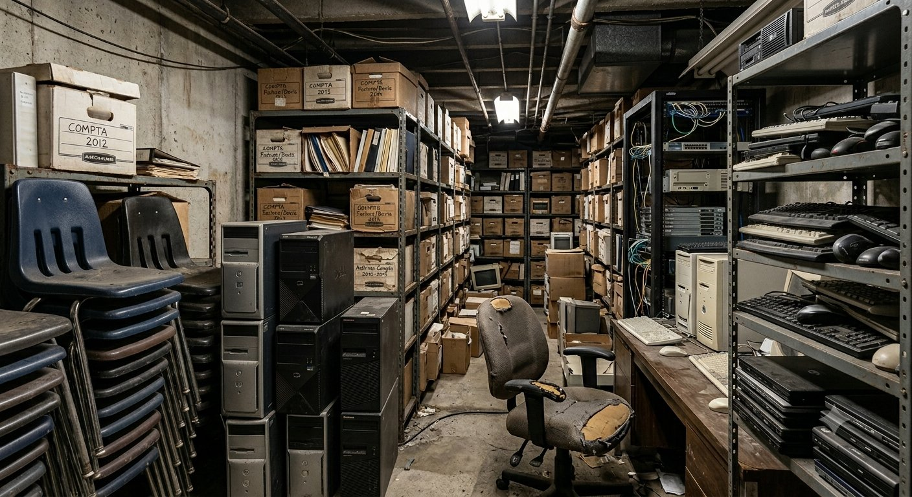
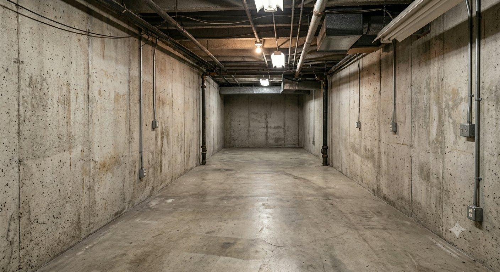

Débarras éco-responsable : comment TMBO valorise 100 % de ce qu'il enlève

Un débarras de locaux professionnels génère trois grandes catégories de flux : du papier, du mobilier et des équipements électroniques. Dans ce secteur, beaucoup mélangent tout dans une benne. Chez TMBO, on fait exactement l'inverse — depuis 1986.
Voici, flux par flux, comment nous traitons chaque catégorie — et pourquoi cette approche a un impact environnemental concret, mesurable et réel.
Le travail TMBO : avant et après
Une image vaut mieux qu'un long discours. Voici un exemple réel d'intervention TMBO — un local encombré d'archives et de matériel depuis des années, livré vide, propre et prêt à l'emploi.

Avant
AprèsLe papier et les archives : broyé, puis recyclé
Archives papier, cartons, dossiers suspendus
Collectés en contenants scellés sur votre site, vos archives sont acheminées directement vers une usine de broyage spécialisée, sans passage par un espace ouvert. Le broyage rend tout document totalement illisible et irreconstituable. Une fois broyé, le papier est envoyé en papeterie pour être recyclé en papier neuf — refermant ainsi la boucle.
Pour 1 tonne de papier recyclée, c'est environ 17 arbres, 26 000 litres d'eau et 2,5 MWh d'énergie qui sont économisés par rapport à la production de papier vierge.
Frais de mise en traitement offerts Certificat de destruction inclusLe mobilier de bureau : réemploi ou recyclage matière
Bureaux, sièges, armoires, tables, cloisons…
Tout meuble en bon état est récupéré, nettoyé, contrôlé puis intégré à notre stock de mobilier de bureau reconditionné — disponible à la revente à d'autres entreprises, associations ou collectivités. C'est la forme la plus vertueuse de valorisation : aucune transformation, aucune dépense énergétique supplémentaire, juste une seconde vie directe.
Le mobilier trop usé est démonté : les métaux vont en fonderie, les bois en filière bois-énergie ou panneaux reconditionnés, les plastiques en recyclage matière. Rien ne part à la décharge sans avoir été trié.
Réemploi prioritaire Recyclage matière si nécessaireLes équipements électroniques (DEEE) : filière agréée obligatoire
Ordinateurs, serveurs, imprimantes, copieurs, câbles…
Les Déchets d'Équipements Électriques et Électroniques contiennent des substances dangereuses — mercure, plomb, cadmium — qui ne peuvent en aucun cas finir en décharge ordinaire. TMBO achemine l'intégralité de ses DEEE vers des centres de traitement agréés par éco-organisme, conformément à la directive européenne DEEE.
Dans ces centres, chaque appareil est démantelé, les composants dangereux sont neutralisés et les matières précieuses — or, cuivre, argent — sont extraites et réintroduites dans la chaîne industrielle. Une tonne d'équipements électroniques recyclés contient plus d'or qu'une tonne de minerai extrait en mine.
Filière DEEE agréée Document de suivi fourniLes encombrants divers (DIB) : tri systématique avant toute élimination
Caissons plastiques, palettes, emballages, divers…
Pour les Déchets Industriels Banals qui n'entrent dans aucune catégorie de réemploi ou recyclage direct, nous opérons un tri systématique avant toute élimination. Les palettes bois vont à des filières bois, les plastiques à des recycleurs spécialisés, les cartons en filière papier-carton. Ce qui reste — en volume très limité — est orienté vers des centres de valorisation énergétique agréés, pas vers l'enfouissement brut.
Tri avant toute éliminationCe que ça change concrètement
Voici la différence entre un débarras traditionnel et un débarras TMBO, en résumé :
Un atout pour votre bilan RSE
De plus en plus d'entreprises sont tenues de rendre compte de leur impact environnemental — loi PACTE, reporting extra-financier, critères ESG des donneurs d'ordre… En faisant appel à TMBO, vous pouvez intégrer votre débarras dans votre bilan carbone et RSE avec la documentation nécessaire sur les filières utilisées.
Nous pouvons vous fournir, sur demande, un récapitulatif des volumes traités et des filières d'orientation — un argument concret pour vos parties prenantes et vos rapports annuels.
Frais de mise en traitement offerts — sur toutes nos prestations
Que vous ayez des archives à détruire, du mobilier à évacuer ou des équipements électroniques à traiter, TMBO prend en charge les frais de mise en traitement. Vous libérez vos locaux de manière responsable, sans surcoût — et avec tous les documents de traçabilité nécessaires.